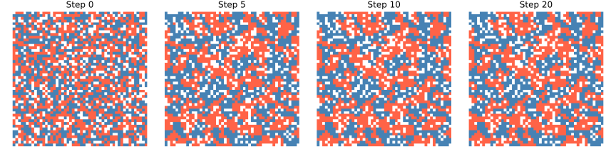

Schelling Segregation Model
The Problem
- In 1971, economist Thomas Schelling asked whether mild individual preferences for similar neighbours could produce large-scale residential segregation
- The answer is yes: even when each agent requires only 30% of occupied neighbours to share its type, the population self-organises into sharply segregated clusters
- The Schelling model is an agent-based model:
- Place two types of agents on a grid, leaving some cells empty
- At each step, identify dissatisfied agents and move each to a random empty cell
- Repeat until no agent moves, or for a fixed number of steps
- The model is a landmark result in computational social science because it shows that macro-level patterns can emerge from micro-level rules without central coordination.
Which of the following best explains why the Schelling model produces segregation even at a low threshold such as 30%?
- Agents actively seek to be surrounded entirely by their own type.
- Wrong: agents only require that a minimum fraction of neighbours are the same type; they do not seek any particular neighbourhood composition beyond that.
- Dissatisfied agents move to random empty cells, but satisfied agents stay put,
- so same-type clusters accumulate around contented individuals.
- Correct: movement is triggered by dissatisfaction alone. Once a cluster forms, its interior agents are satisfied and stop moving, reinforcing the boundary.
- The grid is too small for the two types to mix uniformly.
- Wrong: the result holds for grids of many sizes and is not a finite-size effect.
- Random movement eventually produces uniform mixing.
- Wrong: random movement does not preserve spatial structure; systematic movement away from dissatisfying neighbourhoods does.
The Grid and Neighbourhood
- The grid is an $N \times N$ array. Each cell holds one of three values: 0 (empty), 1 (red agent), or 2 (blue agent)
- The Moore neighbourhood of a cell is the set of up to eight surrounding cells (horizontal, vertical, and diagonal)
- The same-neighbour fraction for an agent at position $(r, c)$ is:
$$f(r,c) = \frac{\text{occupied neighbours of the same type}}{\text{total occupied neighbours}}$$
- An agent is satisfied when $f(r,c) \geq \theta$, where $\theta$ is the threshold
- An agent with no occupied neighbours is treated as satisfied ($f = 1$) so that isolated agents do not drift endlessly across empty space
Initializing the Grid
- Equal numbers of red and blue agents are placed at random in a fraction $(1 - p_e)$ of cells, where $p_e$ is the empty fraction
- The empty cells provide the vacancies that dissatisfied agents move into
def make_grid(size=GRID_SIZE, empty_fraction=EMPTY_FRACTION, seed=SEED):
"""Return a random grid of RED and BLUE agents with some EMPTY cells.
Each cell contains 0 (EMPTY), 1 (RED), or 2 (BLUE). The two agent
types are equal in number; the remaining cells are empty.
"""
rng = np.random.default_rng(seed)
n_cells = size * size
n_empty = int(n_cells * empty_fraction)
n_agents = n_cells - n_empty
n_red = n_agents // 2
n_blue = n_agents - n_red
flat = np.array([EMPTY] * n_empty + [RED] * n_red + [BLUE] * n_blue)
rng.shuffle(flat)
return flat.reshape(size, size)
Computing the Same-Neighbour Fraction
- Iterating over the 8 relative offsets $(\Delta r, \Delta c) \in {-1,0,1}^2 \setminus \{(0,0)\}$ visits each neighbour exactly once
- Grid boundaries are handled by checking that the neighbour index lies within $[0, N)$
def same_neighbor_fraction(grid, row, col):
"""Return the fraction of occupied neighbours of the same type.
Uses the Moore neighbourhood (up to 8 surrounding cells).
Returns 1.0 when no neighbours are occupied so isolated agents
are always considered satisfied.
"""
size = grid.shape[0]
agent_type = grid[row, col]
n_same = 0
n_occupied = 0
for dr in (-1, 0, 1):
for dc in (-1, 0, 1):
if dr == 0 and dc == 0:
continue
r, c = row + dr, col + dc
if 0 <= r < size and 0 <= c < size and grid[r, c] != EMPTY:
n_occupied += 1
if grid[r, c] == agent_type:
n_same += 1
if n_occupied == 0:
return 1.0
return n_same / n_occupied
One Simulation Step
- All dissatisfied agents are identified first, then all empty cells
- Both lists are shuffled independently and paired in order
- Each dissatisfied agent moves to the corresponding empty cell if one exists
- Shuffling before pairing ensures no agent is systematically favoured
def step(grid, threshold=THRESHOLD, rng=None):
"""Return a new grid after moving all dissatisfied agents.
Each dissatisfied agent is paired with a randomly chosen empty cell
and moved there. Agents that cannot be matched (too few vacancies)
stay in place.
"""
if rng is None:
rng = np.random.default_rng(SEED)
size = grid.shape[0]
dissatisfied = [
(r, c)
for r in range(size)
for c in range(size)
if grid[r, c] != EMPTY and same_neighbor_fraction(grid, r, c) < threshold
]
empties = [(r, c) for r in range(size) for c in range(size) if grid[r, c] == EMPTY]
rng.shuffle(dissatisfied)
rng.shuffle(empties)
new_grid = grid.copy()
for i, (r, c) in enumerate(dissatisfied):
if i < len(empties):
er, ec = empties[i]
new_grid[er, ec] = grid[r, c]
new_grid[r, c] = EMPTY
return new_grid
Measuring Segregation
- The satisfaction rate (i.e., the fraction of agents that meet the threshold) rises as the grid segregates and reaches 1.0 when every agent is happy with its neighbourhood
def satisfaction_rate(grid, threshold=THRESHOLD):
"""Return the fraction of agents that are satisfied.
A higher satisfaction rate indicates that agents have clustered with
like neighbours; it approaches 1.0 as stable clusters form.
"""
size = grid.shape[0]
n_agents = 0
n_satisfied = 0
for r in range(size):
for c in range(size):
if grid[r, c] != EMPTY:
n_agents += 1
if same_neighbor_fraction(grid, r, c) >= threshold:
n_satisfied += 1
if n_agents == 0:
return 1.0
return n_satisfied / n_agents
After 20 steps with threshold 0.3, the satisfaction rate is 0.92. What does this mean?
- 92% of agents have at least 30% same-type neighbours.
- Correct: satisfaction rate counts the fraction of agents whose same-neighbour fraction meets or exceeds the threshold.
- 92% of cells are occupied.
- Wrong: the fraction of occupied cells is fixed by the initial empty fraction and does not change during the simulation.
- The two agent types are 92% spatially separated.
- Wrong: satisfaction rate measures individual agent happiness, not a global spatial segregation index.
- 92% of agents are surrounded entirely by same-type neighbours.
- Wrong: the threshold is 0.3, not 1.0; an agent with even one same-type neighbour out of three total may already be satisfied.
Running the Simulation
def run(grid, n_steps=N_STEPS, threshold=THRESHOLD, seed=SEED):
"""Run the simulation and return a list of grid snapshots.
Element 0 is the initial grid; element i is the grid after i steps.
"""
rng = np.random.default_rng(seed)
snapshots = [grid.copy()]
for _ in range(n_steps):
grid = step(grid, threshold, rng)
snapshots.append(grid.copy())
return snapshots
def plot_snapshots(snapshots, steps_to_show, filename):
"""Save a figure showing the grid state at the given step indices.
White cells are empty, red cells are type RED, blue cells are type BLUE.
"""
n = len(steps_to_show)
cmap = mcolors.ListedColormap(["white", "tomato", "steelblue"])
fig, axes = plt.subplots(1, n, figsize=(3 * n, 3))
for ax, idx in zip(axes, steps_to_show):
ax.imshow(snapshots[idx], cmap=cmap, vmin=0, vmax=2, interpolation="nearest")
ax.set_title(f"Step {idx}")
ax.axis("off")
fig.tight_layout()
fig.savefig(filename, dpi=150)
plt.close(fig)

Testing
-
Grid shape and contents
make_gridmust produce a $(50 \times 50)$ array whose cells are all in ${0, 1, 2}$
-
Balanced agent counts
- Red and blue agents are built as equal halves of the occupied pool, so their counts differ by at most 1 (an off-by-one when the total number of agents is odd)
-
Neighbour fractions
- An isolated agent (no occupied neighbours) must return 1.0, matching the convention that isolated agents are considered satisfied
- An agent surrounded entirely by the same type returns 1.0
- One surrounded entirely by the opposite type returns 0.0
-
Stable segregated grid
- A $4 \times 4$ grid with red in the left two columns and blue in the right two columns is fully satisfied
- Border agents have $5/8 = 0.625$ same-type neighbours which exceeds the threshold of 0.3
- One step must leave the grid unchanged
-
Satisfaction increases
- Starting from the random initial grid, the satisfaction rate after 20 steps must exceed the initial rate because agents self-organise into clusters
import numpy as np
import pytest
from schelling import (
EMPTY,
RED,
BLUE,
GRID_SIZE,
SEED,
make_grid,
same_neighbor_fraction,
step,
satisfaction_rate,
run,
)
def test_grid_shape():
# Grid must be a square with side GRID_SIZE.
grid = make_grid()
assert grid.shape == (GRID_SIZE, GRID_SIZE)
def test_grid_cell_values():
# Every cell must be EMPTY, RED, or BLUE.
grid = make_grid()
assert set(np.unique(grid)).issubset({EMPTY, RED, BLUE})
def test_grid_agent_counts_balanced():
# The two agent types are built as equal halves of the agent pool,
# so their counts differ by at most 1 (rounding when n_agents is odd).
grid = make_grid()
assert abs(np.sum(grid == RED) - np.sum(grid == BLUE)) <= 1
def test_neighbor_fraction_isolated_agent():
# An agent with no occupied neighbours has same_neighbor_fraction 1.0
# so it is treated as satisfied and never moves.
grid = np.zeros((5, 5), dtype=int)
grid[2, 2] = RED
assert same_neighbor_fraction(grid, 2, 2) == pytest.approx(1.0)
def test_neighbor_fraction_all_same():
# An agent surrounded entirely by the same type has fraction 1.0.
grid = np.full((3, 3), RED, dtype=int)
assert same_neighbor_fraction(grid, 1, 1) == pytest.approx(1.0)
def test_neighbor_fraction_all_different():
# An agent surrounded entirely by the opposite type has fraction 0.0.
grid = np.full((3, 3), BLUE, dtype=int)
grid[1, 1] = RED
assert same_neighbor_fraction(grid, 1, 1) == pytest.approx(0.0)
def test_stable_grid_unchanged():
# A perfectly segregated 4x4 grid (RED left, BLUE right) has every
# agent meeting the 0.3 threshold, so no movement should occur.
# Border agents (column 1 or 2) have at least 5 same-type neighbours
# out of 8, giving a fraction of 0.625 >= THRESHOLD.
grid = np.zeros((4, 4), dtype=int)
grid[:, :2] = RED
grid[:, 2:] = BLUE
rng = np.random.default_rng(SEED)
assert np.array_equal(step(grid, rng=rng), grid)
def test_satisfaction_increases():
# Running 20 steps from the random initial grid must raise the
# satisfaction rate; agents self-organise into clusters.
grid = make_grid()
initial = satisfaction_rate(grid)
snapshots = run(grid)
assert satisfaction_rate(snapshots[-1]) > initial
Schelling model key terms
- Schelling model
- An agent-based simulation in which agents on a grid move to random empty cells when fewer than a threshold fraction of their occupied neighbours share their type; even a low threshold produces large-scale segregation
- Moore neighbourhood
- The set of up to 8 cells immediately surrounding a grid cell (horizontal, vertical, and diagonal); cells on the boundary have fewer than 8 neighbours
- Same-neighbour fraction
- $f = \text{same-type occupied neighbours} / \text{total occupied neighbours}$; defined as 1.0 for isolated agents; an agent is satisfied when $f \geq \theta$
- Satisfaction rate
- The fraction of agents whose same-neighbour fraction meets the threshold; increases as the grid segregates toward a stable clustered state
- Emergent segregation
- Large-scale spatial separation of agent types arising from individual satisfaction rules without any global coordination or explicit goal of segregation
Exercises
Do the math
An agent has 8 fully occupied Moore neighbours, of which 3 are the same type. What is its same-neighbour fraction?
Effect of threshold
Run the simulation with thresholds of 0.1, 0.3, 0.5, and 0.7. Plot the satisfaction rate over time for each threshold on the same axes. At what threshold does the model fail to reach a satisfaction rate above 0.95 within 50 steps?
Asymmetric populations
Modify make_grid so that red agents make up 70% of the occupied cells and
blue agents make up 30%.
Run the simulation with threshold 0.3 and compare the final satisfaction rate
with the balanced case.
Which type ends up more satisfied, and why?
Segregation index
The satisfaction rate measures individual happiness, not the spatial extent of
clustering.
Implement a mean_cluster_size function that computes the mean size of same-type
connected components using scipy.ndimage.label.
Plot mean cluster size over time alongside the satisfaction rate.
Convergence detection
Add a converged parameter to run that stops early when fewer than 1% of
agents are dissatisfied.
How many steps are needed to converge at threshold 0.3 for a 100x100 grid?